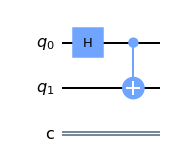
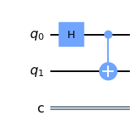
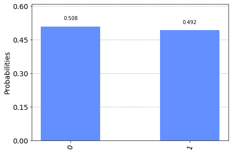
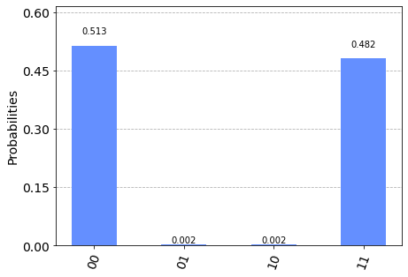

from qiskit import QuantumCircuit, BasicAer, execute
from qiskit.visualization import plot_histogram
qc = QuantumCircuit(2, 1)
qc.h(0)
qc.cx(0, 1)
qc.draw(output='mpl')

I’ve known the formal definition of entanglement for years, but I am only now appreciating many of its profound implications. In this post I would like to share two aspects that put entangled states into sharp contrast with unentangled (separable pure) states and classical random variables. Instead of proofs I provide references and simple experiments in qiskit.

So what is entanglement? Entanglement is what entangled states have. What are those? Take two spins. The state
\[\begin{align} \frac1{\sqrt{2}}\Big(|\uparrow\uparrow\rangle+|\downarrow\downarrow\rangle\Big) \label{bell} \end{align}\] is your canonical example of an entangled stated. In contrast, all the states below are unentangled \[\begin{align} |\uparrow\uparrow\rangle,\qquad |\downarrow\uparrow\rangle,\qquad \frac1{\sqrt{2}}|\uparrow\rangle\Big(|\uparrow\rangle-|\downarrow\rangle\Big),\qquad \frac1{\sqrt{2}}\Big(|\uparrow\rangle-|\downarrow\rangle\Big)\Big(|\uparrow\rangle+|\downarrow\rangle\Big) \label{unen} \end{align}\]
The difference between \(\eqref{bell}\) and \(\eqref{unen}\) is the following. All latter states are actually products of the form \(|\psi_1\rangle |\psi_2\rangle\) where \(|\psi_1\rangle\) is the state of the first system and \(|\psi_2\rangle\) of the second. In contrast, state \(\eqref{bell}\) can not be represented in as a product. It is instead a linear combination of factorized states which is not reducible to a single product. You can define entangled states by this property of not being factorizible into states of consistuent spins.
Now that we know what entangled states are it is perfectly reasonable to ask: “so what?”. Why are entangled states special? I am going to give two angles on this questions, out of many possible.
Note for the sake of concreteness and simplicity I talk about “spins”. In the context of discrete-variable quantum computation “spin”\(\equiv\)“qubit”, but I prefer spins, because they come with a useful geometrical intuition. The abstract Bloch sphere associated to a qubit describes an actual orientation of a spin in \(3d\) space.
A spin which is not entangled can always be described by a direction \(\bf n\) along which it is pointing \(|\uparrow_{\bf n}\rangle\). If one measures the component of the spin along this direction, the result is always \(\frac12\). Such a measurement corresponds to a projector \(P({\bf n})={\bf n}\cdot {\bf \sigma}=n_x \sigma_x+n_y\sigma_y+n_z\sigma_z\). If state \(|\uparrow_{\bf n}\rangle\) is measured along a different axis \(\bf n'\) the result depends on the angle \(\theta\) between \(\bf n\) and \(\bf n'\). With probability \(\cos^2\frac\theta2\) one gets projection \(+\frac12\) and with probability \(\sin^2\frac\theta2\) one gets \(-\frac12\). However, for any state of the spin \(|\psi\rangle\) there is an axis \(\bf n\), such that measuring the spin along this axis gives \(\frac12\) with probability one.
This is also true for any of the unentangled states \(\eqref{unen}\). For example, measuring the projection of the first spin in the state \(|\uparrow\uparrow\rangle\equiv |\uparrow_{\bf z}\uparrow_{\bf z}\rangle\) along \(\bf z\) always gives \(+\frac12\). As another example, since \[\begin{align} |\downarrow_{\bf x}\rangle=\frac12\Big(|\uparrow_{\bf z}\rangle-|\downarrow_{\bf z}\rangle\Big) \label{xdown} \end{align}\] the state \(\frac1{\sqrt{2}}\Big(|\uparrow\rangle-|\downarrow\rangle\Big)\Big(\uparrow\rangle+|\downarrow\rangle\Big)\) always registers \(-\frac12\) when the projection of the first spin along \(\bf x\) axis is measured.
In contrast, for the maximally entangled state \(\eqref{bell}\) the axis with a definite projection of the first spin does not exist. In fact, for all intents and purposes, if you only look at observables associated with the first qubit, state \(\eqref{bell}\) behaves as a statistical ensemble of states \(|\uparrow\rangle\) and \(|\downarrow\rangle\), i.e.
\[\begin{align} \frac1{\sqrt{2}}\Big(|\uparrow\uparrow\rangle+|\downarrow\downarrow\rangle\Big)\approx \cases{|\uparrow\rangle \text{ with probability $\frac12$}\\ |\downarrow\rangle \text{ with probability $\frac12$}} \label{bellapprox} \end{align}\]
This means, for example, that projection onto \(\bf z\) axis of the first spin is completely random: with probability \(\frac12\) it behaves as \(|\uparrow\rangle\) and gives projection \(+\frac12\), with probability \(\frac12\) it behaves as \(|\downarrow\rangle\) and gives projection \(-\frac12\). This is different from a coherent superposition of the up and down states, such as \(\eqref{xdown}\). Although state \(\eqref{xdown}\) gives random results when measured along \(\bf z\), it gives certain results when measured along \(\bf x\). There is no such axis for state \(\eqref{bellapprox}\). In fact, the spin projection along any axis is completely random.
To prove this fact I would need to go into some details of how one does construct an ensemble from an entangled state. This is not at all difficult but I won’t do it here. I encourage an interested reader to consult John Preskill’s notes (chapter 2.3).
Instead, let me do a quick experimental check using qiskit. A Hadamard gate followed by a CNOT creates our state \(\eqref{bell}\):
from qiskit import QuantumCircuit, BasicAer, execute
from qiskit.visualization import plot_histogram
qc = QuantumCircuit(2, 1)
qc.h(0)
qc.cx(0, 1)
qc.draw(output='mpl')
To my knowledge, one can only measure in the computational basis in qiskit, i.e. only along \(\bf z\) axis in our terminology. To measure a spin along some axis \(\bf n\) we can instead rotate the spin itself, and then measure along \(\bf z\) axis. Mathematically, if \({\bf n} = R^{-1} {\bf z}\) for some rotation \(R\) then \(\langle \uparrow_{\bf z}|P({\bf n})| \uparrow_{\bf z}\rangle=\langle \uparrow_{R{\bf z}}|P({\bf z})| \uparrow_{R{\bf z}}\rangle\).
# These parameters define an axis along which we will measure.
# Feel free to change them and see if the outcome distribution changes.
theta, pi, lam = 0.13, 0.89, 0.37
qc.u(theta, pi, lam, 0) # Rotate the qubit.
qc.measure(0, 0)
# Execute on a simulator and plot a histogram of the result.
backend = BasicAer.get_backend('qasm_simulator')
result = execute(qc, backend, shots=1000).result()
counts = result.get_counts(qc)
plot_histogram(counts)
The result looks like a fair sample from the uniform probability distribution. This means that projection on the axis we have specified is indeed random. You can try to change the axis and see if you can get a biased distribution (spoiler: you can not).
First let me note that although we talked about the first spin before, the state \(\eqref{bell}\) is symmetric and everything equally applies to the second spin. Although the behavior of each of these spins is completely random, there are strong correlations between the them. If we can make local measurements on both spins the state \(\eqref{bell}\) behaves as
\[\begin{align} \frac1{\sqrt{2}}\Big(|\uparrow\uparrow\rangle+|\downarrow\downarrow\rangle\Big)\approx \cases{|\uparrow\uparrow\rangle \text{ with probability $\frac12$}\\ |\downarrow\downarrow\rangle \text{ with probability $\frac12$}} \label{bellapprox2} \end{align}\]
So for example projections onto \(\bf z\) axis of both spins are always the same, although random. Again, this in fact holds for any axis. Here is an experimental verification.
# Building Bell's state.
qc = QuantumCircuit(2, 2)
qc.h(0)
qc.cx(0, 1)
# Rotation of each qubit to simulate measurement along arbitary axis.
theta, pi, lam = 0.13, 0.89, 0.37
qc.u(theta, pi, lam, 0)
qc.u(theta, pi, lam, 1)
qc.measure([0, 1], [0, 1])
# Simulate and plot results.
backend = BasicAer.get_backend('qasm_simulator')
result = execute(qc, backend, shots=2000).result()
counts = result.get_counts(qc)
plot_histogram(counts)
The result I get is almost certainly a uniform distribution of over \(00=|\uparrow_{\bf n}\uparrow_{\bf n}\rangle\) and \(11=|\downarrow_{\bf n}\downarrow_{\bf n}\rangle\) (you can change \(\bf n\) by changing angles in the code), however I also get a tiny number of spurious counts for \(01\) and \(10\), which is probably a bug, hm.
When seeing this for the first time there is definitely something to contemplate, like say an EPR paradox. Spoiler: it is not possible to use these correlations for superluminal transmission of information, but they are still a valuable resource. I will discuss just one manifestation of these quantum correlations which has a very concrete operational interpretation – it allows a quantum team to play a certain probabilistic game better than any classical team could! Note that this is also basically Bell’s theorem in disguise.
So here is the setup. Alice and Bob are playing together against Charlie. Charlie sends random uncorrelated bits \(x\) to Alice and \(y\) to Bob. Admittedly, Charlie’s job is not very creative and nothing in his strategy can be changed. Now, in response to the obtained bits Alice produces her output bit \(a\) and Bob his \(b\). Team A&B wins if \(a\oplus b=x\land y\) where \(\oplus\) is XOR (sum modulo 2) and \(\land\) is the logical AND. Explicitly, if \(x\land y=1\) both Alice and Bob got \(x=y=1\) (which happens one quarter of the time) and they win iff they respond \(a=0, b=1\) or \(a=1, b=0\) so that \(a\oplus b=1\). For all other inputs from Charlie, i.e. when \((x,y)\) is equal to \((0,0), (1,0)\) or \((0,1)\) the logical sum \(x\land y=0\) and Alice and Bob win iff \(a=0,b=0\) or \(a=1, b=1\) so that \(a\oplus b=0\).
Now, although in the same team, Alice and Bob are not allowed to communicate during the game. But they can discuss their strategy in advance. The best that a classical team can do is to win \(75\%\) of the time. To achieve this winning rate it is sufficient to simply output \(a=0, b=0\) irrespective of Charlie’s bits \(x,y\). This strategy only loses when \(x=y=1\), i.e. one quarter of the time.
Now comes the interesting part. If Alice and Bob each have a spin, and these spins are entangled as in state \(\eqref{bell}\), they can achieve the winning probability \[\begin{align} P_{win}= \frac12+\frac1{2\sqrt{2}}\approx 0.85! \label{pwin} \end{align}\] So, what should they do?
Define four axes \(\bf n_1,n_2,n_3,n_4\) in the \(\bf xz\) plane (of course this is just one of the possibilities). Take \({\bf n_1}= (1,0)\), then \({\bf n_2}=(\frac1{\sqrt{2}},\frac1{\sqrt{2}})\) is counter-clockwise rotated by \(\pi/4\) wrt to \(\bf n_1\); \({\bf n_3}=(0,1)\) is rotated by \(\pi/2\); and finally \({\bf n_4}=(-\frac1{\sqrt{2}},\frac1{\sqrt{2}})\) is rotated by \(3\pi/4\).
Now here is the strategy that Alice and Bob follow \[\begin{align} a(x)=\cases{P_{\bf n_3}, \qquad x=0 \\P_{\bf n_1}, \qquad x=1}\qquad\qquad b(y)=\cases{P_{\bf n_2}, \qquad y=0 \\P_{\bf n_4}, \qquad y=1} \label{abcases} \end{align}\]
Where \(P_{\bf n}=+1\) if Alice’s (or Bob’s) spin gave projection \(+\frac12\) when measured along \(\bf n\) and \(P_{\bf n}=0\) if the projection was \(-\frac12\). An example: if Alice recieves \(x=0\) and Bob \(y=1\) Alice measures her spin along \(n_3=\bf z\) axis and sends back the result, while Bob measures his spin along \(\bf{n_4}\) (which is \(3\pi/4\) rotated \(\bf x\) axis) and sends his result.
Now, shall we check that this strategy indeed achieves the advertised winning probability \(\eqref{pwin}\)? Sure, I also thought so!
import numpy as np
# Define rotation axes by their angles.
theta1 = 0
theta2 = np.pi/4
theta3 = np.pi/2
theta4 = 3*np.pi/4
def charlie():
# Charlies job is to generate two random bits.
return np.random.randint(0,1+1, size=(2))
def alice(x):
# Alice decides on the measurement axis according to her strategy.
if x==0:
return theta3
if x==1:
return theta1
def bob(x):
# Bob does his part of the protocol.
if x==0:
return theta2
if x==1:
return theta4
def one_round():
# First we prepare an entangled state.
qc = QuantumCircuit(2, 2)
qc.h(0)
qc.cx(0, 1)
# Now Charlie generates his bits.
x, y = charlie()
# A&B team makes their move.
a_angle = alice(x)
b_angle = bob(y)
# Again, we can not measure directly along the desired axes,
# but must rotate the qubits instead. Rotation in the xz plane is made by `ry` gate.
qc.ry(a_angle, 0) # Alice rotates her qubit.
qc.ry(b_angle, 1) # Bob his.
# Now we add measurments and actually run the circuit.
qc.measure([0, 1], [0, 1])
backend = BasicAer.get_backend('qasm_simulator')
result = execute(qc, backend, shots=1).result()
counts = result.get_counts(qc)
# Output of counts is a dict like `{'01': 1}`. This extracts the measurment results:
a, b = [int(c) for c in list(counts.keys())[0]]
# And now we check, team A&B gogogo!
return (a + b) % 2 == x * yAlright, now let us collect the statistics:
num_rounds = 2000
wins = 0
for _ in range(num_rounds):
wins += one_round()
print ("Win probability:{}".format(wins/num_rounds))Win probability:0.847So that’s pretty close to the theoretical value \(\eqref{pwin}\). Note that for each round of the game a new entangled pair is needed.
Now that we have seen that the strategy works let us briefly discuss why. I will only give a sketch and refer for details to Preskill’s lectures chap 4.3.
One thing Alice and Bob could do is to always measure along the same axes. Then, their results would be perfectly correlated (i.e. they always output \(a=b=0\) or \(a=b=1\)) which gives 0.75 winning probability, the same as the best deterministic strategy. Now, in one quarter of cases (when \(x=y=1\)) they are better off outputting anticorrelated results. If we revisit the figure above equation \(\eqref{abcases}\) we see that the angle between \(a(1)\) and \(b(1)\) is \(3\pi/4\) which indeed gives a negative correlation in this case \(\Big(\cos \frac{3\pi}{4}=-\frac{1}{\sqrt{2}}\Big)\). The price to pay is that angles between \(\Big(a(0),b(0)\Big)\), \(\Big(a(0),b(1)\Big)\) and \(\Big(a(1),b(0)\Big)\) are now non-zero (and hence correlations are less than 1) which makes this strategy lose in some cases when the deterministic strategy wins. However, as we have seen experimentally the trade-off is still in our favor. It is also possible to prove that our choice of axes gives the maximum possible win probability. This is ultimately bound by Tsirelson’s bound, see below.
Now you might ask – what if there exists a clever randomized classical strategy which would perform better than deterministic 0.75 using a similar trick? Turns out this is not possible. The proof is based on the following inequality \[\begin{align} \Big|\langle a_0 b_0\rangle+\langle a_0 b_1\rangle+\langle a_1 b_0\rangle-\langle a_1 b_1\rangle\Big|\leq 2 \end{align}\] which holds for any random variables \(a_0, a_1, b_0, b_1\) taking values \(\pm1\) and described by a joint probability distribution. This is known as CHSH inequality and a technical proof is trivial. Why quantum correlations do not have to obey the bound? Well, the reason is somewhat deep and quantum and ultimately related to Bohr’s complementarity – non-commuting observables can not be simultaneously assigned values. That this statement has quantitative consequences is illustrated by Bell’s theorem or our game.
Tehcnically quantum correlations obey the Tsirelson’s bound \[\begin{align} \Big|\langle a_0 b_0\rangle+\langle a_0 b_1\rangle+\langle a_1 b_0\rangle-\langle a_1 b_1\rangle\Big|\leq 2\sqrt{2} \end{align}\] which, as you see, is weaker by a factor \(\sqrt{2}\), so the correlations themselves can be stronger, although still bounded.
Quantum entanglement is indeed very unusual and consequential. There are many more wonders that it entails, please consult your favorite lecture notes for a non-exhaustive list. My current favorite are John Preskill’s lecture notes. For a non-mathematical although technically very accurate discussion of entanglement see this artice by Frank Wilczek entanglement made simple.
Any questions and suggestions are welcome, as this is my first blog demo.